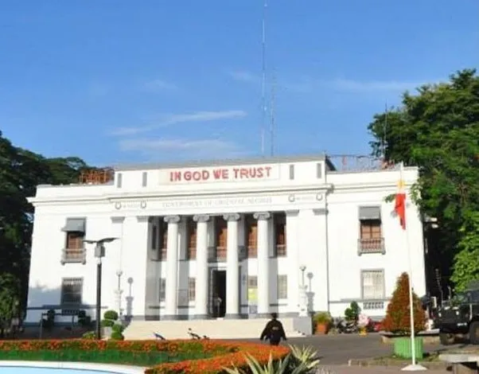

N E G R O S O R I E N T A L

Negros Oriental is a province in the Philippines located in the Central Visayas region. Its capital is the city of Dumaguete. It occupies the southeastern half of the large island of Negros, and borders Negros Occidental, which comprises the northwestern half.
Negros Oriental (Cebuano: Sidlakang Negros; Tagalog: Silangang Negros) is a province in the Philippines located in the Central Visayas region. Its capital is the city of Dumaguete. It occupies the southeastern half of the large island of Negros, and borders Negros Occidental, which comprises the northwestern half. It also includes Apo Island, a popular dive site for both local and foreign tourists.
Negros Oriental faces Cebu to the east across the Tañon Strait and Siquijor to the south-east (which happened to be part of the province before). The primary spoken language is Cebuano and the predominant religious denomination is Roman Catholicism. Dumaguete City is the capital, seat of government and most populous city of the province. With a population of 1,432,990 inhabitants, [4] it is the second most-populous province in Central Visayas after Cebu, the fifth most-populous province in the Visayas and the 19th most-populous province of the Philippines.